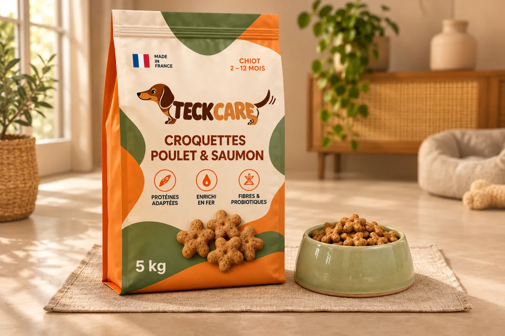
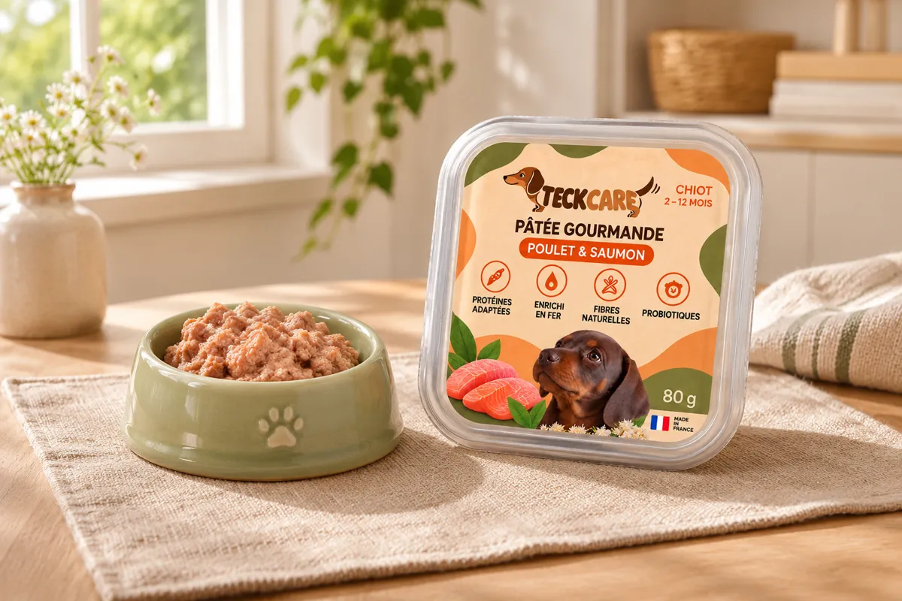
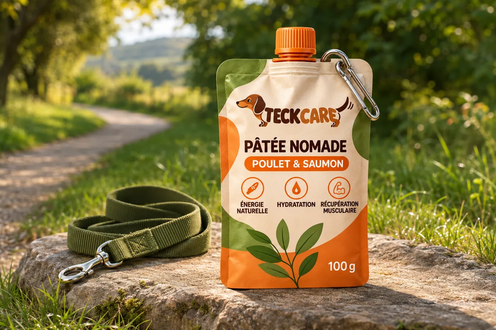

Croquettes Poulet & Saumon
La base de ses repas quotidiens.
—
Hack your teckel’s growth
En une minute, découvrez quels produits choisir et quelle quantité lui donner.
Un rappel 5 jours avant la fin du sac01Votre parcours
Parlez-nous de votre chiot : nous vous conseillons ses produits et sa ration, avec un rappel pour recommander à temps.
Son prénom, son âge, son poids et sa silhouette : une minute pour mieux le connaître.
Les produits adaptés à ses besoins, les quantités à lui donner et la durée estimée de son sac.
Ajoutez un rappel à votre agenda, cinq jours avant la fin estimée du sac.
02Ses besoins, nos conseils
Bien choisir ses produits, doser ses repas et commander à temps : tout commence par quelques questions…
03Ses repas, nos produits
Une recette poulet & saumon pour les chiots teckels de 2 à 12 mois, en croquettes et en pâtées.
La base de ses repas quotidiens.
—
À mélanger à ses croquettes.
Barquette de 80 g
2,40 € la barquette
Une gourde à emporter en sortie.
Gourde de 100 g
2,90 € la gourde
Quelle quantité lui donner ?
Créer son sac


04Le rappel de fin de sac
Combien de temps va durer son sac ? Recevez un rappel 5 jours avant la fin, dans votre agenda.
05Mon véto
Recherchez une clinique près de chez vous et réservez un rendez-vous pour votre chiot.
06Le club TeckCare
Rejoignez la communauté des maîtres de teckels : des conseils pour chaque âge, des rencontres toute l’année, et un réseau pour lui trouver des copains… ou un partenaire.
Rencontres pour une portée : réservées aux teckels adultes, avec un bilan vétérinaire à jour. Pour la santé de la race, parlez-en d’abord à votre vétérinaire.
07FAQ
Tout ce qu’il faut savoir sur la ration, le sac et la commande.
Une autre question ?
contact@teckcare.example
Non. TeckCare, c’est une recette unique Poulet & Saumon pour tous les chiots teckels de 2 à 12 mois. Ce qui est personnalisé, c’est notre conseil : la quantité à lui donner chaque jour et le format de sac le plus adapté.
Nous conseillons le format qui dure le plus près d’un mois avec sa ration : les croquettes restent fraîches et vous ne rachetez pas trop souvent. Un jeune chiot qui mange peu commence souvent par 2 kg, un chiot plus grand passe au 5 kg. Le parcours « bon poids » fait le calcul pour vous.
Nous construisons notre réseau de cliniques partenaires. Dès qu’une clinique de votre ville nous rejoint, elle offre une première consultation de croissance aux nouveaux clients TeckCare. En attendant, le calculateur vous aide à trouver un vétérinaire près de chez vous.
Non. Vous commandez un sac quand vous le souhaitez, et vous pouvez créer un rappel avant la fin du sac depuis le résultat du carnet.
Parlez-en à votre vétérinaire avant toute chose. La ration TeckCare est une estimation et ne remplace pas son avis.
Les commandes ouvrent bientôt : pour l’instant, vous pouvez précommander sans payer. Les conditions de livraison, de retour et de paiement seront publiées à l’ouverture.